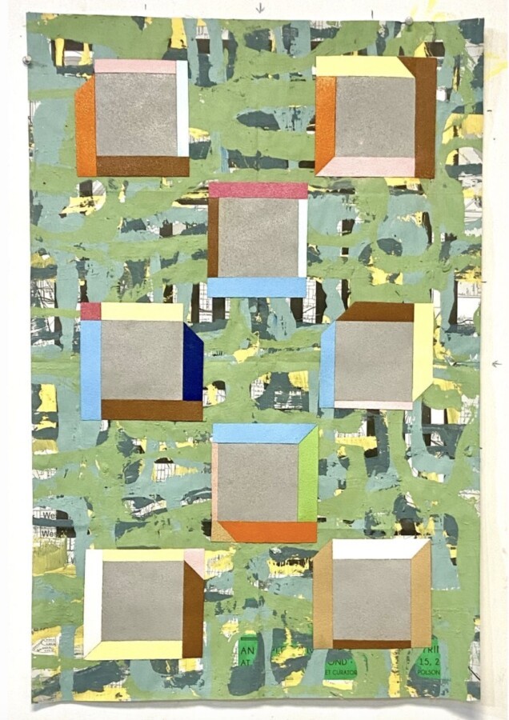

Garry Noland: Loot Box
Garry Noland,
Loot Box
Opening Reception
April 23, 4-8 pm
Remarks and Artist walk thru at 6:30pm
Material is pleased to present Loot Box: New/Recent Works On/Of Paper, a solo exhibition by the Kansas City-based artist Garry Noland. The exhibition centers on the Plan-O-Gram series, combining acrylic, latex, baking soda, spray paint, and non-skid tape on paper. Materials sourced from hardware stores, supermarkets, and the residue of daily life. In Noland’s hands, the industrial and the domestic become equal players in a formal language that is rigorous without being rigid, systematic without foreclosing surprise.
The title Loot Box evokes accumulation, randomness, and the surprise of contents unknown until opened: a fitting frame for a practice built on chance arrangements and the discovery of meaning through proximity. Each work proposes an answer and immediately complicates it, layering collaged printed matter beneath brushed and sprayed surfaces so that the past is never fully buried, only renegotiated.
Noland’s process is openly attentive to chance. He speaks of rough patches, glitches, and mistakes not as aberrations to be corrected but as events to be read: moments where the material asserts its own logic and the artist must decide whether to follow. The resulting works carry this history of negotiation visibly. Edges are sites of meaning. Seams do not close. The surface remains a record of decisions made and unmade.